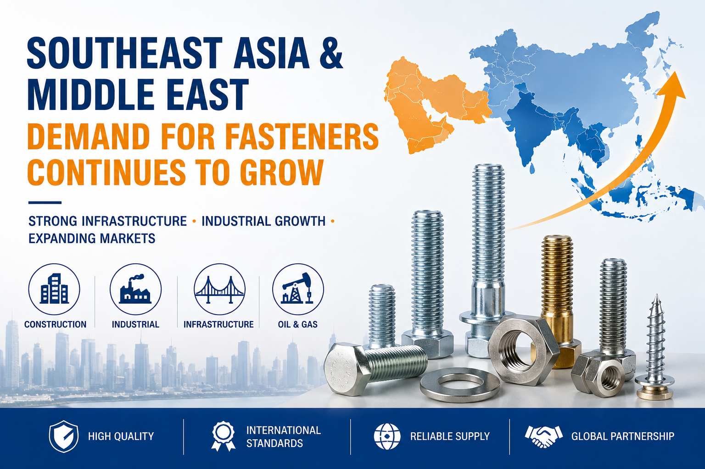

체결구 산업 업데이트 2026: 동남아시아 및 중동 수요 지속 증가
글로벌 인프라 투자와 산업 개발이 계속 확장됨에 따라 체결구 산업은 동남아시아와 중동에서 강력한 성장 기회를 경험하고 있습니다. 대규모 건설 프로젝트, 제조업 성장, 교통 개발, 에너지 투자에 힘입어 이들 지역에서 산업용 체결구 수요가 꾸준히 증가하고 있습니다.
글로벌 체결구 제조업체 및 수출업체에게 동남아시아와 중동은 장기적 잠재력을 가진 주요 신흥 시장으로 부상하고 있습니다. 육각 볼트, 앵커 볼트, 나사봉, 셀프 드릴링 나사, 너트, 와셔, 맞춤형 체결 시스템과 같은 제품은 건설, 철골 구조, 기계 제조, 재생 에너지 프로젝트, 석유 및 가스 산업에서 널리 사용됩니다.
1. 동남아시아, 빠르게 성장하는 시장으로 남아
베트남, 태국, 인도네시아, 말레이시아, 필리핀을 포함한 국가들은 인프라 및 산업 제조에 계속 대규모 투자를 하고 있습니다. 고속도로, 철도 교통 시스템, 항구, 공항, 공장, 상업용 건물과 같은 정부 지원 프로젝트는 고품질 체결 제품에 대한 수요를 견인하고 있습니다.
최근 몇 년간 많은 국제 제조업체들이 생산 시설을 동남아시아로 이전하면서 산업용 하드웨어 및 체결 솔루션에 대한 수요가 더욱 증가했습니다. 건설 계약자와 엔지니어링 회사는 안정적인 품질, 경쟁력 있는 가격, 빠른 납기를 제공할 수 있는 신뢰할 수 있는 공급업체를 찾고 있습니다.
또한, 지역 제조 산업의 급속한 발전으로 기계 조립, 철골 건설, 자동차 부품, 산업 장비에 사용되는 표준 및 맞춤형 체결구의 필요성이 증가했습니다.
2. 중동 건설 및 에너지 프로젝트가 체결구 수요 지원
중동은 건설용 체결구 및 중부하 산업용 볼트의 중요한 시장으로 계속 자리잡고 있습니다. 사우디아라비아, 아랍에미리트, 카타르와 같은 국가들은 스마트 시티, 상업 단지, 교통 시스템, 재생 에너지 프로젝트, 석유 및 가스 인프라에 투자하고 있습니다.
대규모 프로젝트는 높은 인장 강도, 내식성, 긴 수명을 가진 체결 제품을 필요로 합니다. 결과적으로 DIN, ASTM, ISO와 같은 국제 표준을 충족하는 제품이 계약자와 프로젝트 개발자에게 높은 선호를 받고 있습니다.
고온, 습도, 해안 기후를 포함한 가혹한 환경 조건으로 인해 아연 도금 체결구, 스테인리스 스틸 체결구, 내식 코팅 제품이 이 지역에서 점점 더 인기를 얻고 있습니다.
3. 수출 기회 지속 확대
시장 수요 증가에 따라 글로벌 공급업체들은 동남아시아와 중동에서 새로운 수출 기회를 적극적으로 모색하고 있습니다. 구매자들은 공급업체의 신뢰성, 생산 능력, 제품 인증, 장기 협력 가능성에 더 많은 관심을 기울이고 있습니다.
강력한 품질 관리 시스템과 유연한 OEM/ODM 서비스를 갖춘 체결구 제조업체는 이들 시장에서 더 많은 경쟁 우위를 확보할 것으로 예상됩니다. 동시에 안정적인 물류 지원과 효율적인 의사소통은 성공적인 국제 비즈니스 협력을 위한 중요한 요소가 되었습니다.
업계 전문가들은 이들 지역의 체결구 시장이 특히 인프라, 재생 에너지, 산업 제조, 상업 건설 관련 분야에서 향후 몇 년간 긍정적인 성장을 계속 유지할 것으로 믿고 있습니다.
4. 2026년 이후 시장 전망
개발도상국 경제에서 도시화와 산업화가 가속화됨에 따라 글로벌 체결구 공급망은 점차 신흥 시장으로 이동하고 있습니다. 동남아시아와 중동은 국제 체결구 산업의 주요 성장 동력으로 남을 것으로 예상됩니다.
제조업체와 수출업체에게 시장 입지 강화, 제품 품질 개선, 장기 파트너십 구축은 미래 확장을 위한 중요한 기회를 창출할 수 있습니다.
WT Fasteners를 선택해야 하는 이유
- 전문 체결구 제조업체
- OEM 및 ODM 서비스 제공
- 안정적인 품질 관리
- 경쟁력 있는 공장 가격
- 빠른 생산 및 납기
- 글로벌 수출 경험
주요 제품
- 육각 볼트
- 앵커 볼트
- 나사봉
- 셀프 드릴링 나사
- 너트 및 와셔
- 맞춤형 체결구
연락처 정보
제품 세부 정보, 견적 또는 기술 지원을 위해 당사 팀에 문의하십시오.
브랜드: WT Fasteners
WhatsApp: +8613303007993
이메일: info@wtscrews.com
웹사이트: wtscrews.com